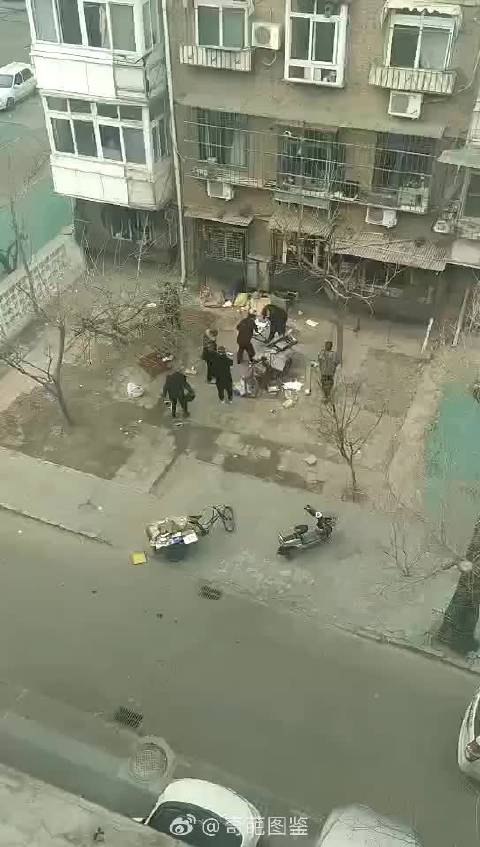

动作行云流水。台上一分钟，台下十年功，送去收复钓鱼岛吧！
@协和医生Do先生:
捐款时歌颂拾荒老人，如今就这样暴力对待？
即使这些东西必须清走，能不能注意执行方式？
(据网友提供信息，视频发生于天津)
以上为寻求官方调查核实的求助信息
据了解实际是街道综合执法与物业公司联合行动，
视频中两位佩戴公职人员帽子。
——————————————————————
以下为官方调查核实后回应结果:
#天津街道回应物业与老人发生冲突#：据红桥区咸阳北路街道，28日，发现有网民在新浪微博发布我街道某社区发生肢体冲突的视频后，第一时间予以核实处置。现将情况说明如下：28日，我街综合执法与物业公司联合清理彰武楼小区堆放杂物时，物业公司人员与视频中的老人发生肢体冲突，后社区负责人现场协调，物业公司与该工作人员向老人道歉，并得到老人谅解。我街已对物业公司负责人进行了约谈，责成严肃处理该工作人员。
据了解，视频反映地点长期、反复堆放废品，物业公司曾多次进行现金回购，但周围群众仍反映存在火灾隐患，视频当事老人也表示废品自行变卖，不再进行集中堆放，大家共同为居民营造良好的生活环境。
#天津回应拾荒老人遭暴力执法#
 协和医生Do先生的微博视频
协和医生Do先生的微博视频  武汉 武汉
武汉 武汉
即使这些东西必须清走，能不能注意执行方式？
(据网友提供信息，视频发生于天津)
以上为寻求官方调查核实的求助信息
据了解实际是街道综合执法与物业公司联合行动，
视频中两位佩戴公职人员帽子。
——————————————————————
以下为官方调查核实后回应结果:
#天津街道回应物业与老人发生冲突#：据红桥区咸阳北路街道，28日，发现有网民在新浪微博发布我街道某社区发生肢体冲突的视频后，第一时间予以核实处置。现将情况说明如下：28日，我街综合执法与物业公司联合清理彰武楼小区堆放杂物时，物业公司人员与视频中的老人发生肢体冲突，后社区负责人现场协调，物业公司与该工作人员向老人道歉，并得到老人谅解。我街已对物业公司负责人进行了约谈，责成严肃处理该工作人员。
据了解，视频反映地点长期、反复堆放废品，物业公司曾多次进行现金回购，但周围群众仍反映存在火灾隐患，视频当事老人也表示废品自行变卖，不再进行集中堆放，大家共同为居民营造良好的生活环境。
#天津回应拾荒老人遭暴力执法#

288万次播放
01:36